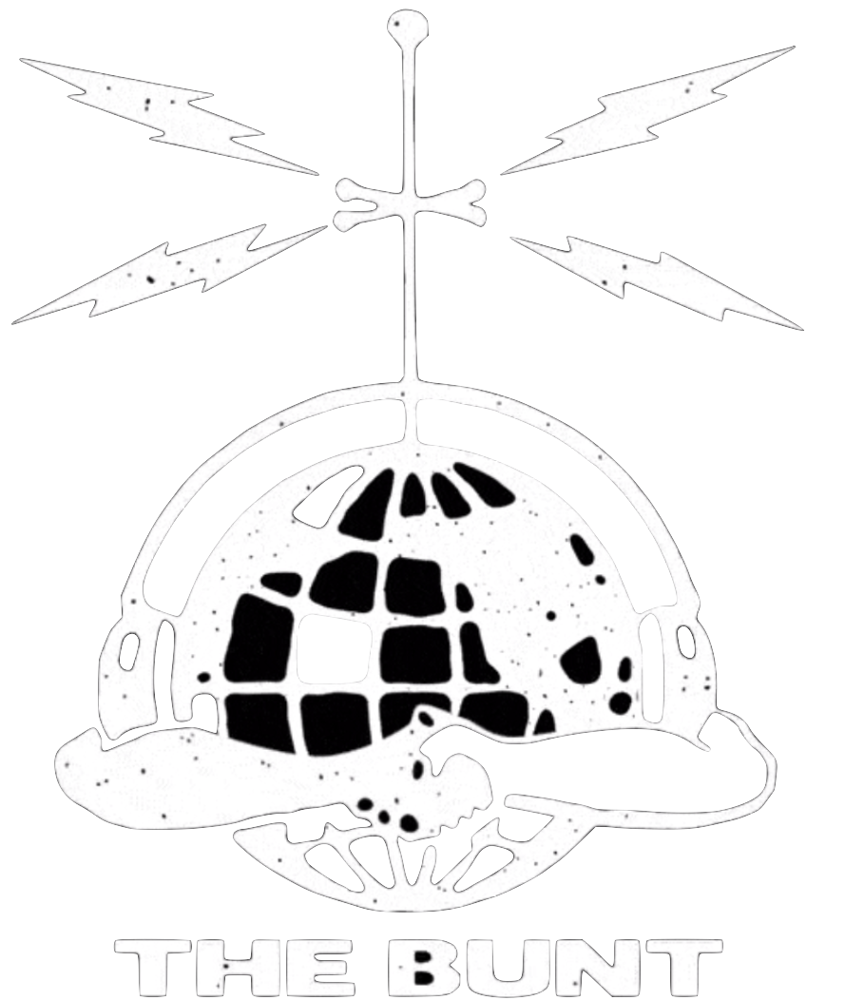
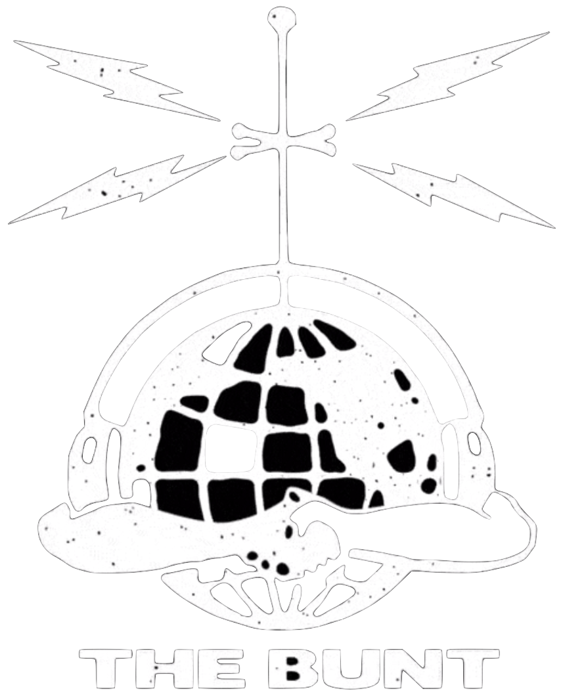

This interactive chart visualizes relationships among professional skateboarders based on influences, favorite styles, and talents shared on "The Bunt" podcast. Each circle represents a skater—the larger the circle, the more they're mentioned by others, indicating greater influence. Lines connect skaters through admiration or inspiration, with colors representing different connection types: favorite skater, favorite style, biggest influence, and most talented.